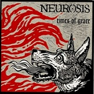

Vamos con la segunda entrega, esperamos que os guste tanto como la primera. Aquí van los 13 discos siguientes esta vez. Que los disfrutéis y esperamos vuestros comentarios:
————————————————————————
36. Pink Floyd – Wish You Were Here
 Las introducciones a este grupo y su sonido creo que sobran —deberían— así que no me extenderé. Wish You Were es un disco que te hace tener el vello de punta durante los primeros quince minutos y fliparlo los otros treinta. En este trabajo no solo se auna la perfección técnica y compositiva si no que además la expresión sentimental es máxima. El disco y en concreto los impresionantes primer y último temas (Shine on you Crazy Diamon Partes 1 y 2) van dedicados a Sid Barret. La agradable voz de Gilmour, sintetizadores, la suave batería, todo en el disco es majestuoso. Aunque siempre quedará en segundo lugar ante el todopoderoso Dark Side of the Moon, el disco que ha dado quizás el tema más conocido de Pink Floyd. Wish You Were Here, una de las baladas más bonitas de la historia. (S—-G)
Las introducciones a este grupo y su sonido creo que sobran —deberían— así que no me extenderé. Wish You Were es un disco que te hace tener el vello de punta durante los primeros quince minutos y fliparlo los otros treinta. En este trabajo no solo se auna la perfección técnica y compositiva si no que además la expresión sentimental es máxima. El disco y en concreto los impresionantes primer y último temas (Shine on you Crazy Diamon Partes 1 y 2) van dedicados a Sid Barret. La agradable voz de Gilmour, sintetizadores, la suave batería, todo en el disco es majestuoso. Aunque siempre quedará en segundo lugar ante el todopoderoso Dark Side of the Moon, el disco que ha dado quizás el tema más conocido de Pink Floyd. Wish You Were Here, una de las baladas más bonitas de la historia. (S—-G)
35. Pink Floyd – the Dark Side Of the Moon

Entre nuestros discos favoritos también hay cabida para un clásico como es The Dark Side of the Moon. Segundo disco del grupo en esta lista y merecidamente por delante de su anterior. No pudimos vivirlo en su momento, pero el hecho de que más de 40 años después siga emocionando y sorprendiendo con cada escucha lo convierte en algo muy grande y a la vez especial. ¿Qué podemos decir de él que no se haya dicho ya? (Llanero Solitario)
34. Pearl Jam – Ten

El éxito del debut de Pearl Jam fue un caso poco convencional. La brillantez con la que Eddie Vedder insertó sus melodías en las demos anteriormente grabadas por los llamados Mookie Blaylock convenció al núcleo de los Green River, Gossard y Ament, y les consiguió un contrato discográfico con una multinacional como Epic, que les popularizó al ritmo explosivo con el que el grunge aparecía en los medios. Aunque el sonido aún mostraba signos de inmadurez Ten destaca por un puñado de diamantes tallados con un estilo que todavía miraba en los estándares del rock más clásico de los 70, furioso pero también con baladas emocionales, y con las letras de Vedder, a medio camino entre la ficción, su autobiografía y el dedo en la yaga de las vergüenzas de la sociedad americana. (rememorama)
33. Neurosis – Times Of Grace
 Con Through Silver in Blood, Neurosis grabó uno de los discos más bestiales de la historia, sonido del que tantas bandas modernas han bebido como si les fuese la vida en ello. Con Times of Gace, llegó el apocalípsis. Una mayor presencia de sintetizadores y la posibilidad de mezclar este disco con su compañero Grace (de la banda Tribes of Neurot , formada por los mismos integrantes que Neurosis), hacen de Times of Grace un álbum infernal en el que la visceralidad más extrema de los temas deja paso a la organicidad de los momentos más ambientales en el que múltiples capas de sonido se superponen para aplastar al oyente. Percusiones brutales, temas contenidos que desembocan en auténticas explosiones de sonido, varios vocalistas rugiendo al mismo tiempo y una producción a cargo del mítico Albini confieren al conjunto mil matices y detalles. Después de todo, un disco con la capacidad de ser radicalmente distinto cada vez que lo escuchas solo está al alcance de unos pocos. (Llanero Solitario)
{kind=link}
32. Parkway Drive – Horizons
{kind=link}
El grupo metalcore fetiche de algunos de nuestros miembros del staff. Horizons es un disco que tuvo mayor repercusión que su predecesor y se lanzó en un momento donde el metalcore ya campaba a sus anchas, por ello muchos de los fans de Parkway Drive empezaron con este disco. Para la mayoría (y para un servidor) ligeramente por debajo de su disco debut. Pero de nuevo los australianos consiguieron machacar nuestros oídos con un trabajo repleto de obras maestras del metalcore como Boneyards o Idols And Anchors. Con él, los directos del grupo se volvían más cañeros si caben y a partir de entonces comenzaba la auténtica fama que merecía el grupo. Un disco digno de encontrarse entre nosotros por la calidad de sus composiciones y por hacernos vivir tan buenos momentos. (Mcore)
31.Opeth – Blackwater Park
{kind=link}
Opeth…el grupo que encandila a la mayoría de los metaleros del mundo, ya sean fans del doom metal, el death o el progresivo. Opeth alcanzaron con este disco el equilibro perfecto entre contundencia y belleza instrumental, entre brutalidad vocal y melodía. Nos enseñaron que se puede pasar del death metal al folk en un segundo sin que chirríe un solo engranaje. Opeth representa la perfección técnica y compositiva de una discografía 10. En Blackwater Park se nos da una lección de estilo en un disco de canciones largas que evolucionan tranquilamente ofreciendo cientos de matices. Mikael Akerfeld, cuya prodigiosa voz pasa de los gruñidos guturales a las voces limpias sin despeinarse, canta con un sentimiento conmovedor. Las frecuentes partes tranquilas del disco dan al álbum una atmósfera de belleza y misterio a la par que la variedad necesaria para no ser un simple disco de metal. (S—-G)
30. Nirvana – Nevermind
{kind=link}
Algo me dice que no sorprenderá la aparición del disco de rock con más difusión comercial de los 90, aquel que fue capaz de aupar a la música alternativa a lo más alto del billboard —desbancando al mismísimo Dangerous de Michael Jackson—, y que barrió con toda la rancia pose del hair-metal para poner en boca de todo el mundo el hasta entonces desconocido movimiento grunge. ¿La clave del éxito? Ahí afuera encontraréis mil análisis que hablarán del resurgimiento del espíritu punk ayudado por la galopante crisis de la juventud norteamericana, de la profusión de himnos generacionales encabezados por Smells Like Teen Spirit y del carisma del propio Kurt Cobain y de su posterior consagración como mártir del rock. Lo que desde SBS queremos transmitir es que la popularidad de este disco (parte ya de la cultura pop) no debe desmerecer en nada su genialidad. (rememorama)
29. Parkway Drive – Killing With a Smile

Y otro disco de Parkway Drive. Killing With A Smile supuso el primer disco de los australianos y nació en una época en que este tipo de bandas comenzaron a asomarse. Por aquel entonces era normal que estos discos entraran directos y a la primera, pero Killing With A Smile no, fue uno de esos trabajos que no deslumbran al principio pero que enamoran con el tiempo y no puedes evitar saborear cada vez más. En este disco se encuentra el himno por excelencia de Parkway Drive, Romance is Dead, a la vez que otros temazos como Gimme AD o Guns for Pro Knives for Show. Este trabajo nació a la vez que el When Goodbye Means Forever de I Killed The Prom Queen y por aquel entonces se comenzó a hablar de una mini ola de metalcore australiano. Hoy en día es un disco referente dentro de su género (mi favorito) y para algunos de los miembros de SBS no existe nada mejor que hacer un «Smoke + A Cold Day In Hell», es decir, escuchar los dos últimos temas del disco seguidos y en bucle. (Mcore)
28. Neurosis – Thorugh Silver in Blood
{kind=link}
El trabajo más demoledor de Neurosis, con el que empiezan a consolidar sus nuevos pasos tras Enemy of the Sun. Una combinación de densísimos riffs y ruidosas atmósferas que junto a la incorporación de atormentados registros vocales dan lugar a pasajes que nos transportan al más genuino apocalipsis. La sencillez y la repetición en las composiciones no son un problema para Neurosis: los temas están apuradamente distribuidos, sirviéndose de repentinos cambios de ritmo y partes discordantes que inevitablemente captan la continua atención del oyente, impidiendo así caer en la monotonía. Consiguen que la tensión y el misterio estén presentes desde el primer tema, homónimo del disco, con un brutal final de tambores; Purify o Locust Star también son dignos de mención. Vale la pena, sin embargo, escucharlo detenidamente de principio a fin y dejarse hipnotizar por la globalidad del disco: es solo así como se puede llegar al clímax de manera propicia. Estamos sin duda ante la cumbre del post-metal, que influenciará a todos y cada uno de los grupos que aparecerán después. (arashi)
27. Led Zeppelin – IV
{kind=link}
El disco más conocido de la banda de rock más conocida de la historia. Un disco que, aunque notable de principio a fin, le debe casi la totalidad de su éxito a una sola canción. Con Stairway to Heaven, Led Zeppelin alcanzaron efectivamente su cielo de fama. Stairway to Heaven es la canción que todo grupo querría haber escrito, es el ejemplo perfecto de melodía y belleza junto a fuerza. Simplemente escucha el solo final de la misma. Impresionante. (S—-G)
26. Faith No More –Angel Dust

Veinte años cumple este disco, y es increíble que siga sonando tan fresco. No se puede negar que Faith No More crearan un clásico y una pieza basal del metal alternativo donde se dan la mano las inventivas líneas de bajo de Bill Gould, la exquisitez de Mike Bordin a las baquetas, las épicas guitarras de Tim Martin, la elegante atmósfera de los teclados de Roddy Bottum, y donde realmente Mike Patton da rienda suelta a su locura artística —teniendo en cuenta que en The Real Thing todavía no había participado en el proceso compositivo—. Himnos como Midlife Crisis, Kindergarten, la tenebrosa Jizzlobber, la abrasiva Smaller and Smaller, o la romántica Crack Hitler beben de una bizarra maraña musical perfectamente coherente, a la vez que delicada y sensual, neurótica y agresiva o rockera y funk, con Mike Patton desvelándose como voz de cien personalidades y divo trasnochado. (rememorama)
25. Crippled Black Phoenix – Night Raider/ The Resurrectionists

Crippled Black Phoenix se convirtieron con este disco en uno de los grupos que más se han valorado recientemente en Suicidebystar. Formado por miembros de Neurosis, Mogwai, Portishead o Electric Wizard se convertía en un super grupo muy afín a los gustos de nuestra Web. La mezcla fué efectivamente brutal. En este doble álbum, rock progresivo, folk y post rock forman una amalgama de géneros que hace difícil etiquetarles. La atmósfera que genera el disco pasa de la oscuridad, los instrumentos de viento y los cánticos monacales a los riffs más épicos o interludios de música circense que encajan perfectamente sin saber muy bien como en esta obra de arte de dos horas de duración. La -por ahora- obra cumbre de una banda verdadera única. (S—-G)
24. Converge – You Fail me

No podía faltar en esta lista un disco de este grupo. Es curioso que el elegido haya sido You Fail Me pues discos como Jane Doe siempre les ha dado mayor repercusión, pero si analizamos los gustos de algunos de nuestros seguidores más acérrimos encontraremos en este disco su ojito derecho de este grupo. You Fail Me hace sólida la propuesta de Converge en sus anteriores trabajos y va más allá en su sonido, mejoran la producción, se muestran más inspirados a pesar de seguir manteniendo ese toque tan caótico y se aprecia un ligero cambio en la voz de su frontman. First Lifght y Last Light dan el pistoletazo de salida para un disco lleno de alma y auténtica garra. Dentro de nuestro círculo, se trata de el grupo que más bailoteos provoca dentro de la vertiente true del blog, los chicos duros de este lado se pirran por los huesos de Bannon y ya esperan con ansias lo nuevo de este cuarteto que practica una música que algunos tildarían de “ruido” mientras que algunos de nosotros preferimos definirla como “el buen metalcore” (ironic). (Mcore)
Agradecemos la iniciativa a «El Chaman», forero encargado de llevar las votaciones.
Continuará…
Apoyános